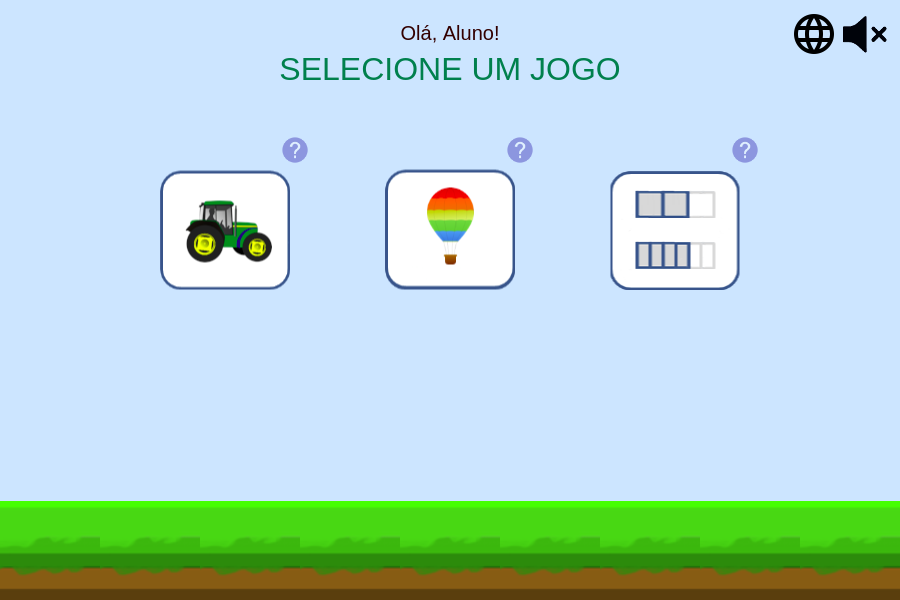
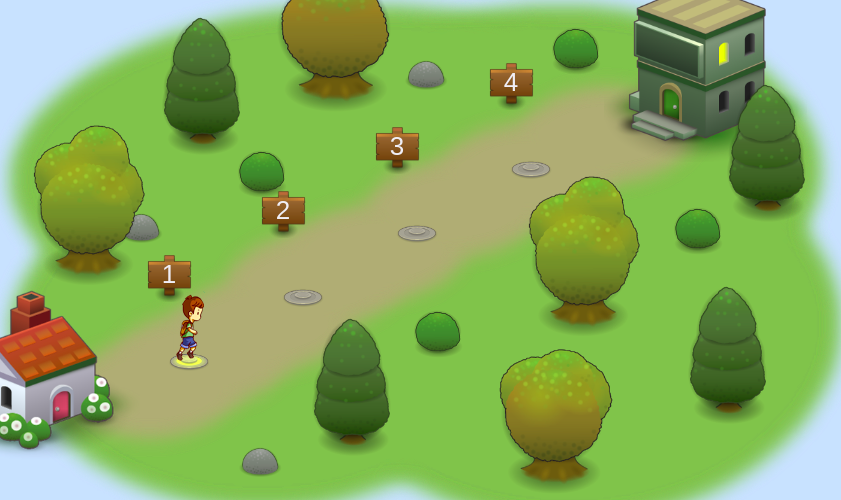

Personalização
O iFractions é uma coletânea de jogos que aborda diferentes assuntos relacionados a frações. Nele, o usuário pode personalizar o jogo como desejado nos menus do iFractions combinando: Jogo + Modo de Jogo + Operação matemática + Nível de dificuldade + Elementos visuais auxiliares.


| Jogo | É o conceito principal. Temos disponíveis atualmente 3 jogos: quadriláteros I e quadriláteros II, que lidam com frações aplicadas em figuras retangulares, e círculos I, que apresenta fração como um arco. |
|---|---|
| Modo de jogo | São as diferentes variações para o jogo selecionado. |
| Operação matemática | Representam diferentes conteúdos de frações (soma, subtração, igualdade etc) que podem ser abordados pelo mesmo jogo. |
| Nível de dificuldade | Representado como um número inteiro tal que quando maior o valor, maior a dificuldade, informa a dificuldade geral do jogo, sendo parâmetro para criação dos 4 fases do jogo selecionado. |
| Elementos visuais auxiliares | Dizem respeito ao controle da adição ou remoção de elementos visuais que podem facilitar o jogo, como mostrar ou não as frações na tela. |
Uma vez configurado, ele gera um mapa com 4 fases para a jogo personalizado, com nível crescente de dificuldade. O objetivo do usuário é então chegar ao final do mapa, finalizando todos os níveis do jogo.


| Jogo | Quandriláteros I (temática rural) |
|---|---|
| Modos de jogo | A (selecionar subdivisão do chão) |
| Operação matemática | Plus (soma de frações) |
| Dificuldade | 3 (Mais difícil) |
| Elementos auxiliares | Mostrar frações |